Kuroshio, Kochi: things to do, food and stays
Kuroshio · Kochi
Kuroshio
Highlighted on the Kochi map.
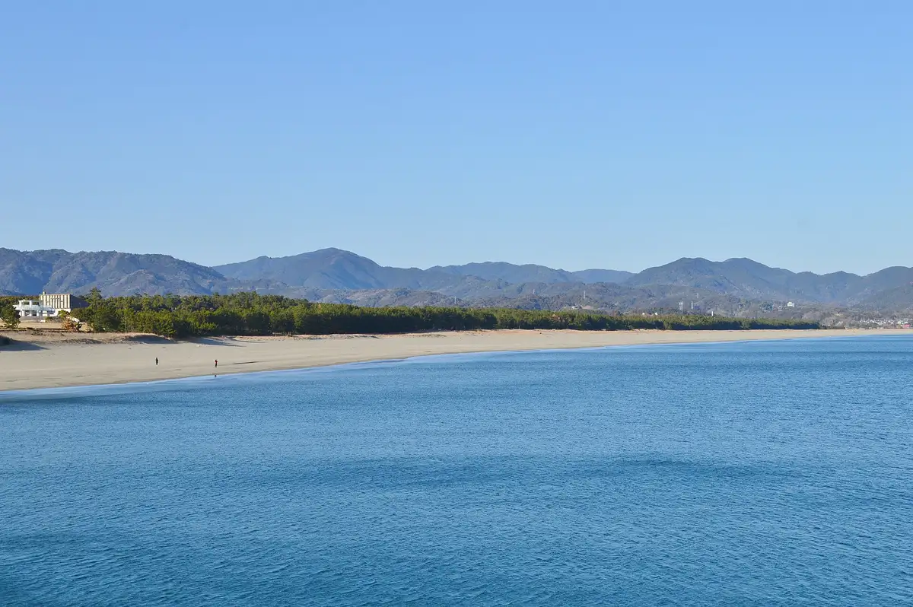
Stay
ネスト・ウエストガーデン土佐
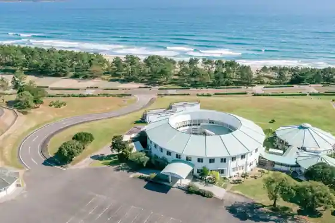
Nesuto Uesuto Garden Tosa
Inn in Irino, Kuroshio with a large communal bath.
土佐佐賀温泉 こぶしのさと
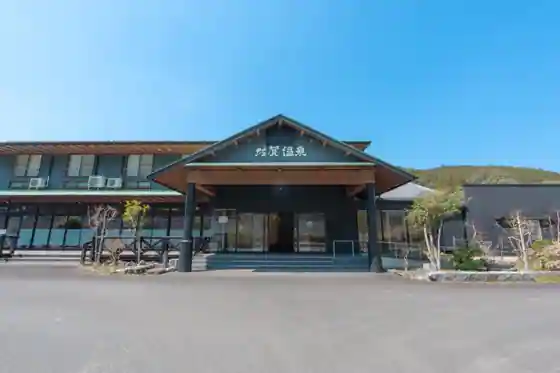
Tosa Saga Onsen Kobushinosato
Inn at Tosasaga Onsen in Kobushinokawa, Kuroshio with open-air baths and a sauna.
うみと暮らす宿 たかはま
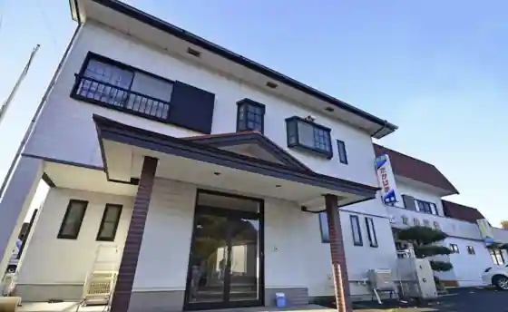
Umito Kura Su Yado Takahama
Ｓｕｒｆ Ｈｏｕｓｅ ＲＥＡＬＩＳＴＡ ＾
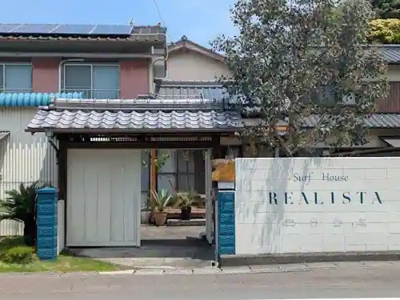
Surf House REALISTA ^
民泊パレス／民泊
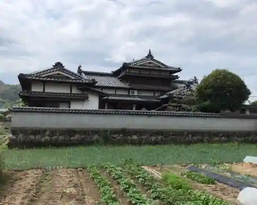
Minpaku Paresu / Minpaku
Inn in Irino, Kuroshio with open-air baths and ski access.
加持ノ宿 黒潮町の一棟貸し宿
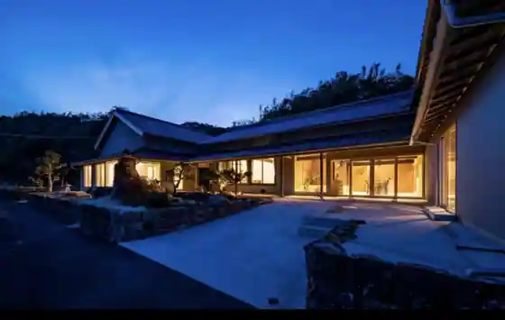
Kaji No Yado Kuroshio Machi No Hitomune Kashi Yado
黒潮の家Ｉ号館 ＾
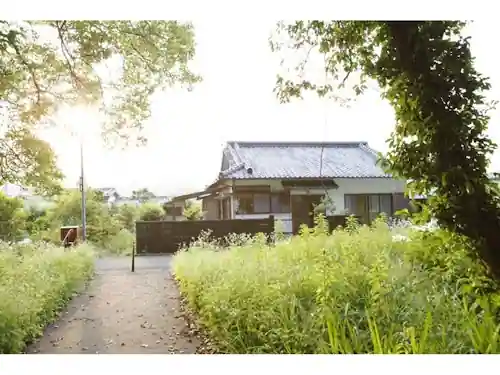
Kuroshio No Ie I Gokan ^
Inn in Irino, Kuroshio with a sauna.
Dining
いろりや
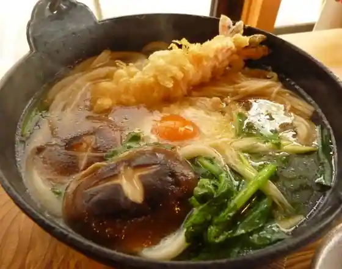
Iroriya
道の駅 ビオスおおがた ひなたや食堂
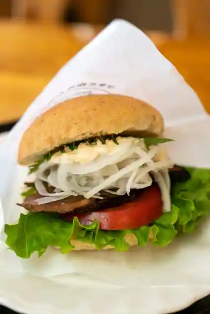
Michi No Eki Biosu Ogata Hinataya Shokudo
黒潮一番館
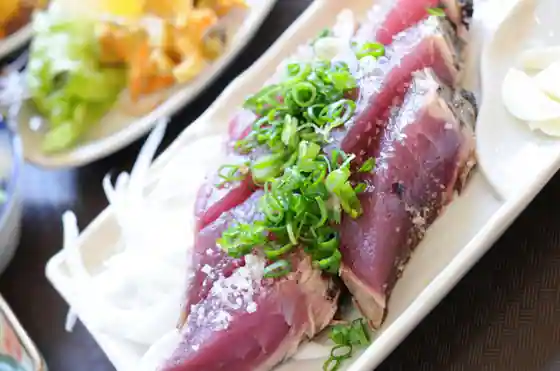
Kuroshio Ichiban Kan
道の駅 なぶら土佐佐賀
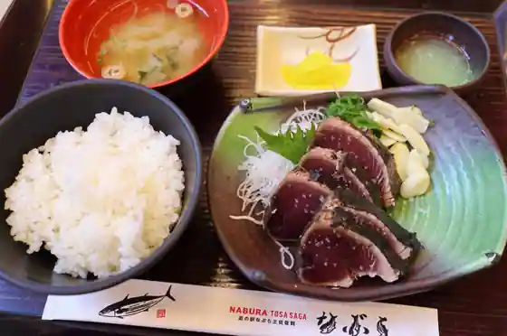
Michi No Eki Nabura Tosa Saga
庄寿庵
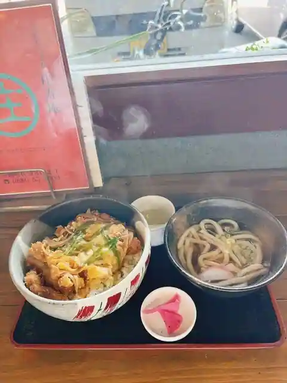
Shoju Iori
ひなたやカフェ
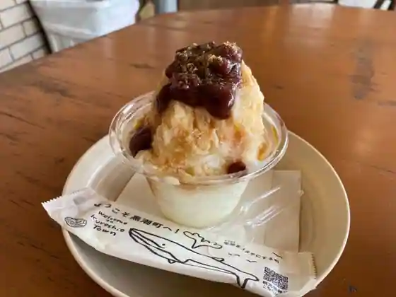
Hinataya Cafe
アーリーバード
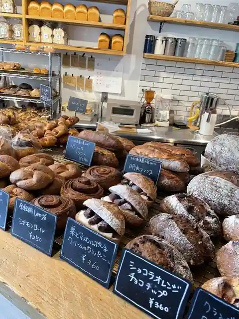
Aribado
民宿たかはま
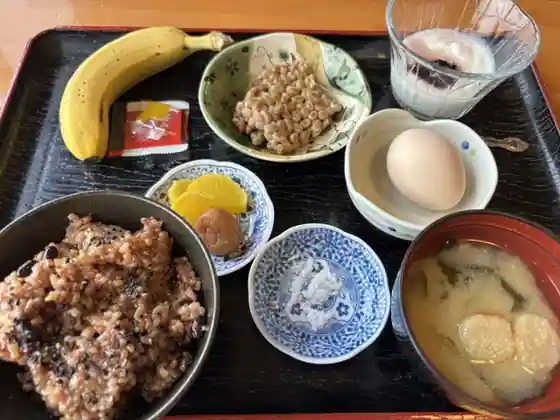
Minshuku Takahama
ｅｒｂａ
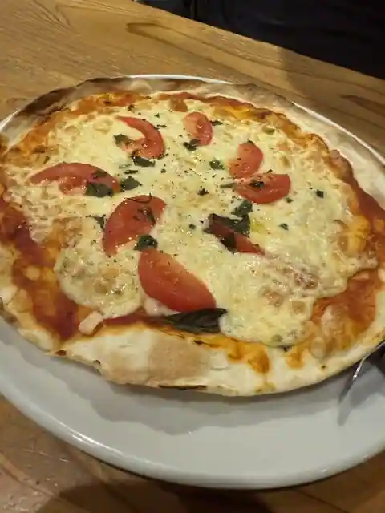
erba
居酒屋ぽこぺん
Izakaya Pokopen
民宿ニュー白浜
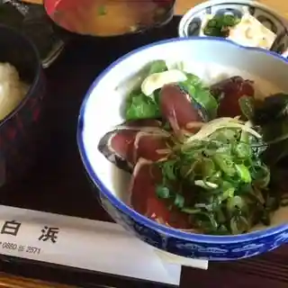
Minshuku Nyu Shirahama
漁家民宿 おおまち
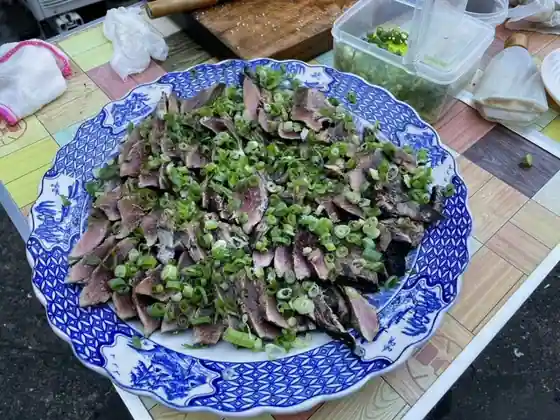
Gyoka Minshuku Omachi
カフェ ロッシ
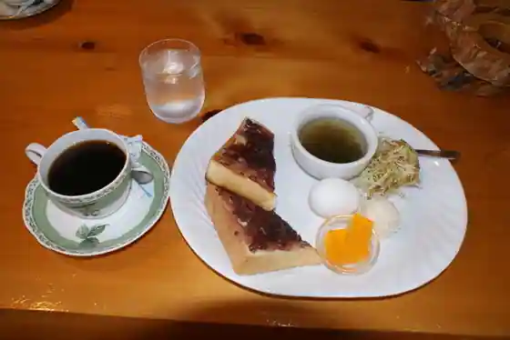
Cafe Rosshi
飲み処 ゆうゆう
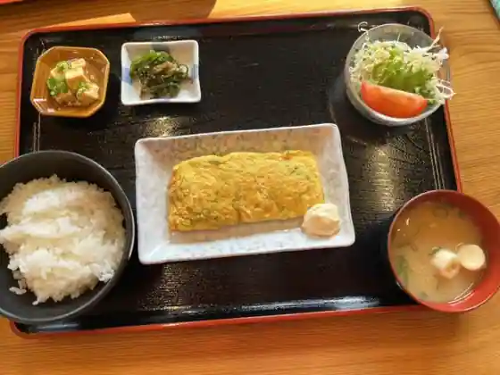
Nomi Tokoro Yuyu
からっと
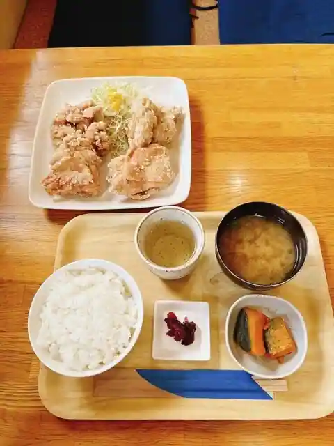
Karatto
SUNLIFE COFFEE WAVES.
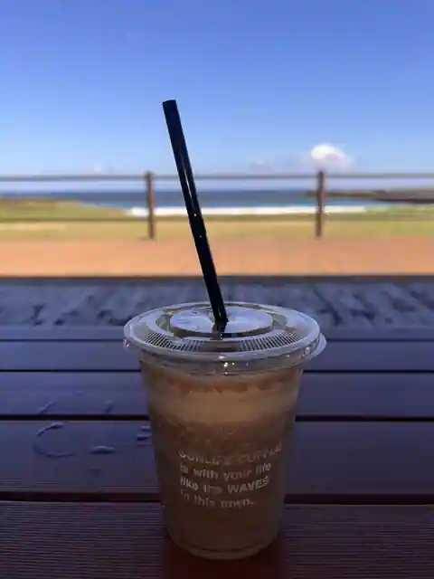
SUNLIFE COFFEE WAVES.
甘味処 和や
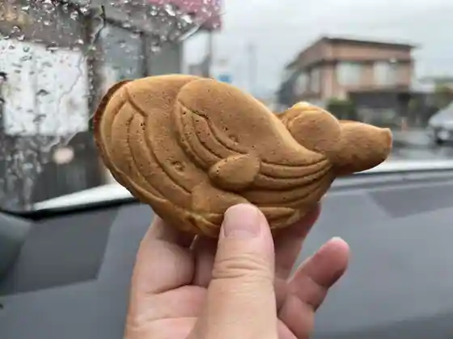
Amami Tokoro Nagoya
ノスタル
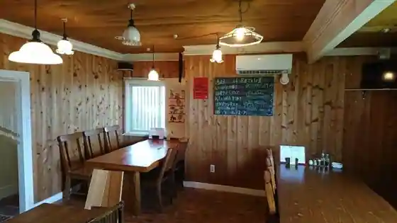
Nosutaru
とりうみ商店
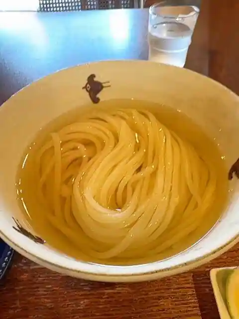
Toriumi Sho
コーヒーショップ駅
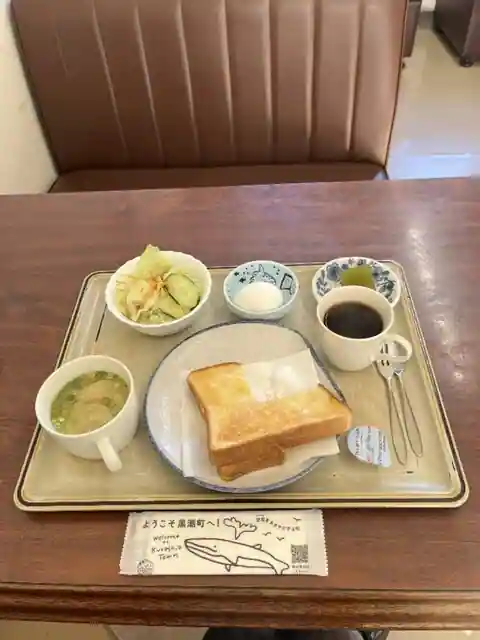
Coffee Shoppu Eki
M
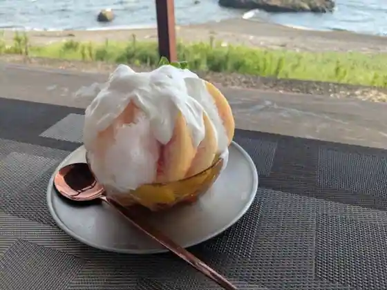
M
PACIFIC BEER WORKS
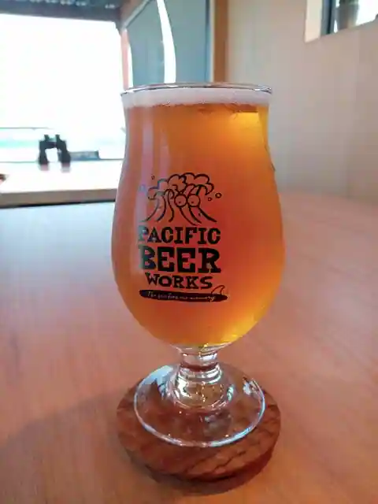
PACIFIC BEER WORKS
Sights
Irino Matsubara
Irino Coast
Beach Art Museum
Kamo Shrine
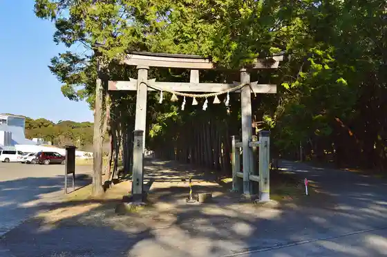
Saga Chiku
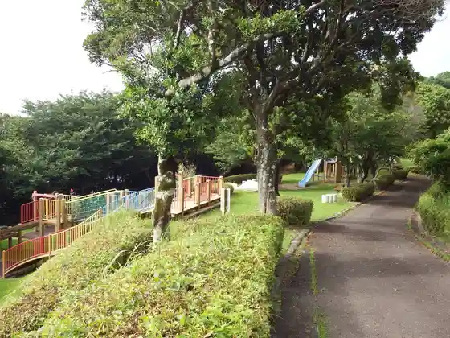